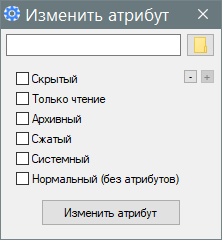

SetFileAttributes
Назначение
Установить атрибуты файла.

1. Поддерживается перетащить/бросить
2. Поддерживается ком. строка - файловый путь
3. При выборе файла кнопкой "Выбрать файл" анализируется буфер обмена, если там путь к папке, то предлагается сделать его начальным каталогом для выбора, а если в буфере обмена файловый путь, то предлагается использовать его как уже выбранный файл.
4. При выборе "Нормальный" снимаются остальные галки и наоборот при выборе любого снимается галка с "Нормальный", потому что они противоречат друг-другу.
5. При выборе файла в заголовке оказывается его имя, так удобней видеть, в случае если путь по длине не помещается в поле и не видно какой там файл в запарке брошен.
6. При открытии файла читаются атрибуты и устанавливаются галки, что показывает текущие перед изменением.
7. Добавлено прописка себя в конт. меню проводника и удаление, кнопками "-" и "+". Только при запуске от админа.
8. Добавлено отключение кнопок если их нельзя использовать, что также показывает есть ли запись в реестре.